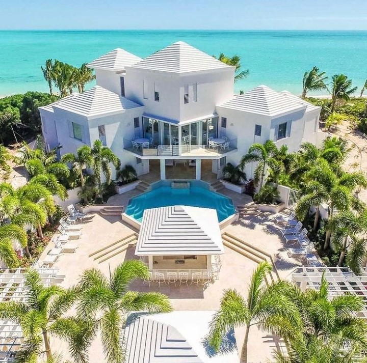

Future
I am aspiring business woman who doesn't really want to spend a lot of years working, preferably i would like to retire at the age 40. Currently i am working to hard, investing so i can continue living a soft life even after i have stopped working. So i thought i should share with you my vision for my retiment home, i wount want to say much. so take your time and admire the beauty of the image. Also i took a moment to add my favourite lodge, for more information click on the links above
